RS Theme - CL Testimonial Responsive HTML Showcase
The Documentationv1.0
- Created: 19 December, 2017
- By: RS theme
- Profile: https://themeforest.net/user/rs-theme/portfolio
- Email: support@rstheme.com
Folder Structure
After downloading you will get Main_files.zip file, you have to unzip it. Then you will get this folder cl_testimonial where you will see main files.
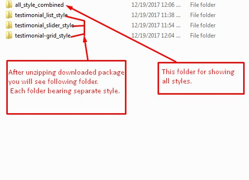
Folder structure of each testimonial style. See the attachment for more details
| Folder | Description |
|---|---|
/css |
Contains all CSS files. |
/js |
Contains all JS files. |
/css/fonts |
Contains fontawesome fonts & favicon icon |
HTML Page Markup
First off, make sure you have a solid code editor, for example Sublime Text. You need to add the compiled and preferably style.less, font-awesome.min.css & bootstrap.css to the header of your HTML5 document. And that's it!
Example
<!DOCTYPE html>
<html>
<head>
<title></title>
<link rel="stylesheet" href="css/font-awesome.min.css" />
<link rel="stylesheet" href="css/slicknav.css" />
<link rel="stylesheet" href="css/owl.carousel.css" />
<link rel="stylesheet" href="css/owl.theme.css" />
<link rel="stylesheet" href="css/owl.transitions.css" />
<link rel="stylesheet" href="css/bootstrap.min.css" />
<link rel="stylesheet" href="style.css" />
</head>
<body>
Your testimonial style code here...
<script src="js/jquery-min.js"</script>
<script src="js/owl.carousel.min.js"</script>
<script src="js/jquery.slicknav.min.js"</script>
<script src="js/main.js"</script>
</body>
</html>
Note: You can learn adding testimonial style see How to Add Testimonial Styles? secton.
Compile Less File to Css
First of, make sure you have a solid less compiler, for example Winless. You need to add the css folder to compile style.less to style.css. See following screenshot:
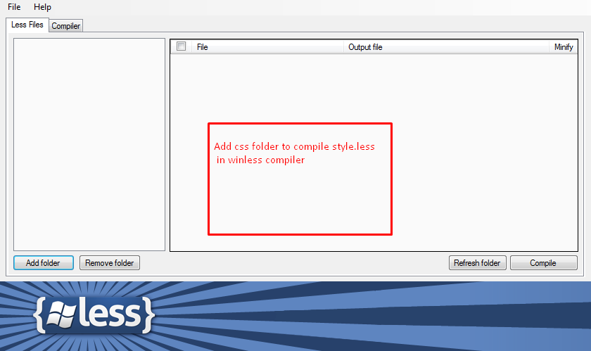Note: After add css folder you should click on compile button to start compiling
Testimonial Styles Overview
Visit slideshow for unique Testimonial Style collections.

How to Add Testimonial Styles?
Hey! you can add testimonial style easily. so please follow these step and screenshot.
- After extract at first you should go cl_testimonial_responsive_html_showcase folder then all_style_combined folder. Then open index.html on editor (example: notepad++, sublime text etc) 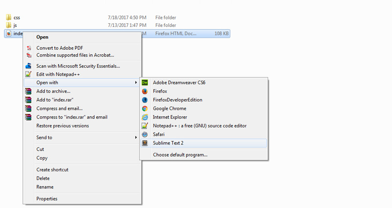
- link for style of your css and js files (see css folder) in head position. 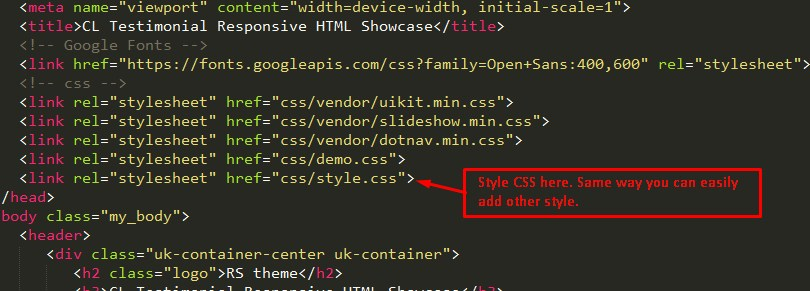
- In this step please add your testimonial style in the body tag. see the attachment and example code. 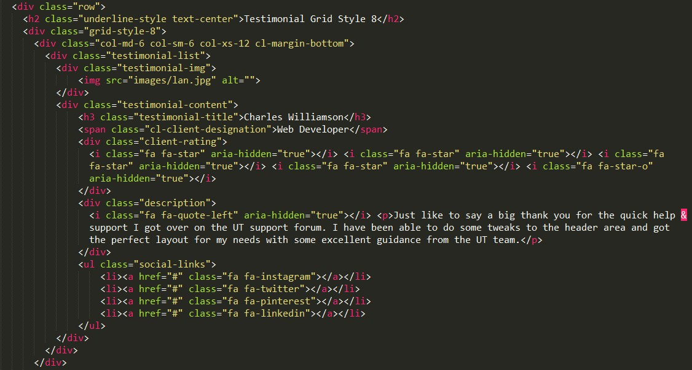 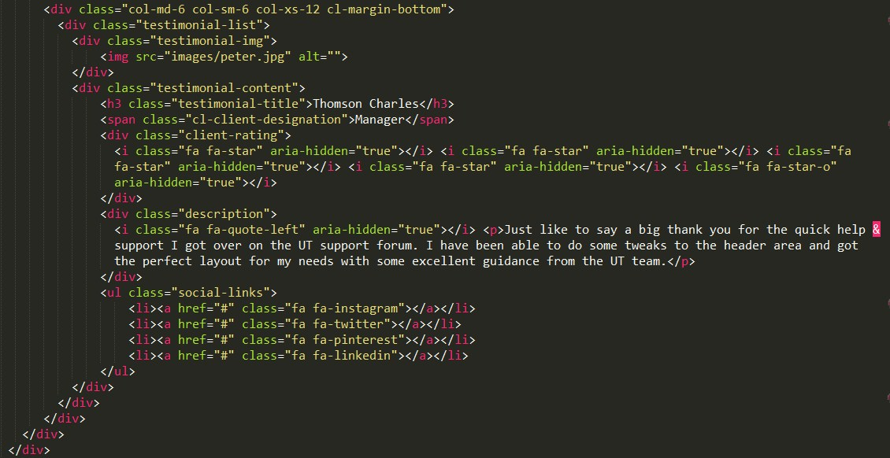
- This step please set your testimonial style in the column tag, that you create last step. 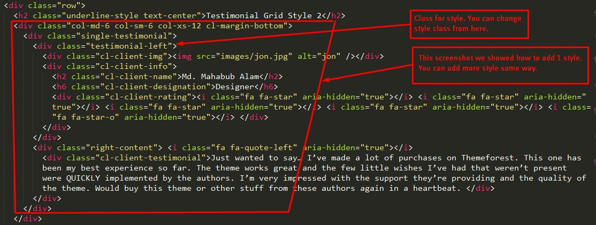
-
Please change the information what you want to use in every testimonial style. To change it, you can follow as the following screenshot.
Example
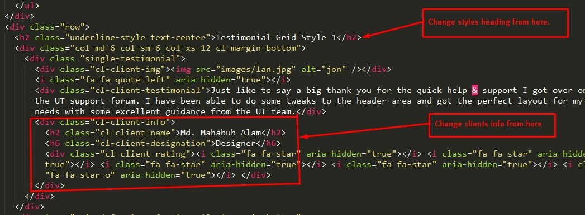Options Uses
Class Description list1Style of the Testimonial List, related class (list2, list3,.....) grid5Style of the Testimonial Grid, related class (grid6, grid7,.....) slider7Style of the Testimonial Slider, related class (slider8, slider9,.....) rowThis class use for create testimonial style row. col-*Use this class for create testimonial style column See Screenshot
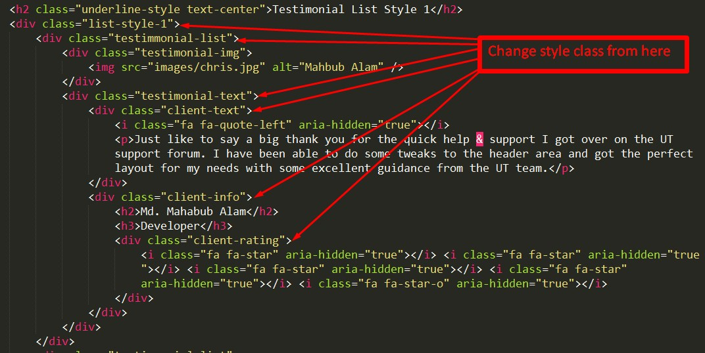Note: As the same way you can add any style of testimonial template.
- Finally just save it and view your browser. Now you are done.
How to Change Testimonial Style?
Dear sir, Our used different Style for our Tesimonial Templte. You can use any style as you need. For change style just follow these steps carefully:
- At first open style.less in winless for compiling it from css folder. 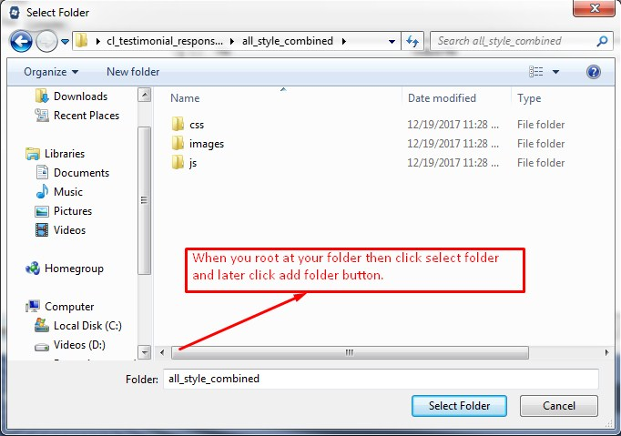
- Now open open style.less file in a solid editor (ex: sublime text).
Suppose you want to change Style of One Item. Then you should go to .list1 class in style.less file.
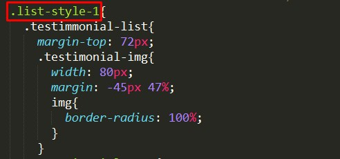 - At the bottom of this class you find .list1, .list2, .list3 etc Here is the style you can change for the Testimonial Style. 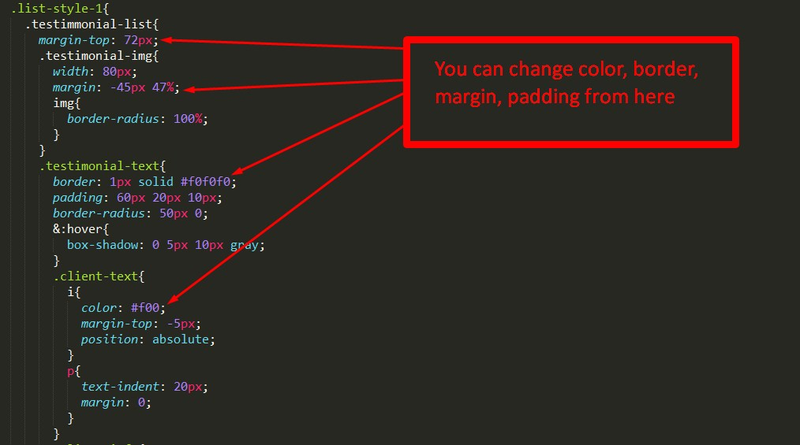
- Finally save it and reload your browser.
How to Change Testimonial Style Columns?
Hello sir, in the documentation we show you how to make 4 columns with style in testimonial style.
-
At first you should go your html file, and make same way testimonial style Columns.
Note: For help please see How to add testimonial style at top.
- Now make your testimonial style as following screenshot. 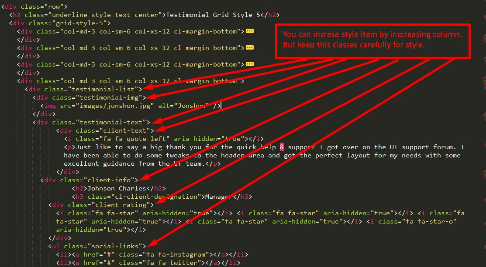
- Finally save it and reload your browser. 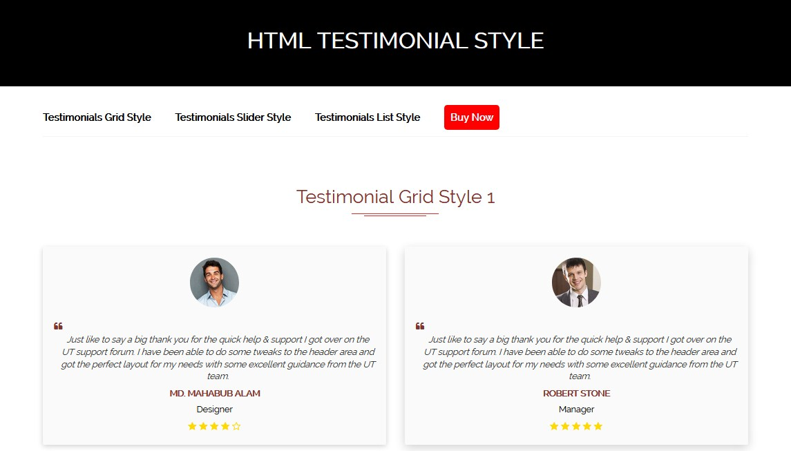
How to Use All Styles?
Hello sir, if you want to use All styles for your site, you should use all_style folder.
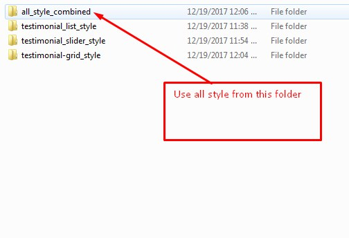How to Use Single Style?
Hello sir, if you want to use single style for your site, you should use by style class from style.css
-
If you want to use only style one for your system, after unzipping downloded file you should open your wished style from testimonial_list_style/testimonial_grid_style/testimonial_slider_style. Then You will find 10 style separately in each format of style. You can use individually what style you want. There is also main file in every folder.
Testimonial Grid Style:
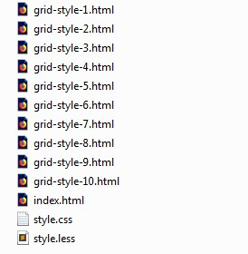Testimonial Slider Style:
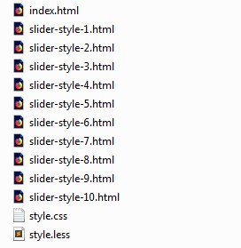Testimonial List Style:
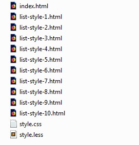 -
Suppose you want to use only style one for your system, you should first open style.css. Then edit by class name.
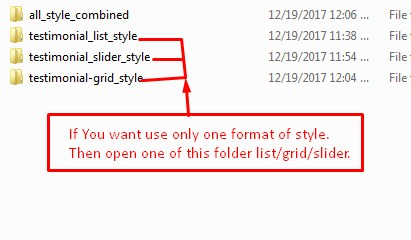 - Now open index.html in a text editor and edit it whatever you want. 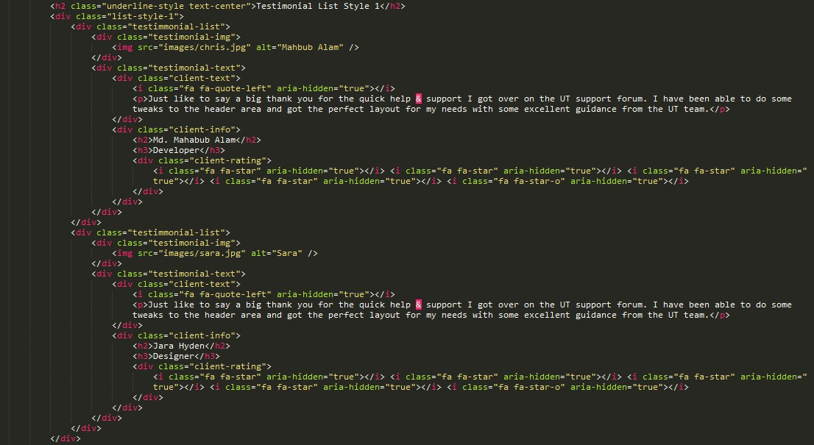
- Finally save it and reload your browser.
Support Policy
Dear sir, if you face problems with the installation or customization of our product please feel free to contact with us. We will try best support for you!.
Email: support@rstheme.com
Thanks For Purchasing CL Testimonial Responsive HTML Showcase.